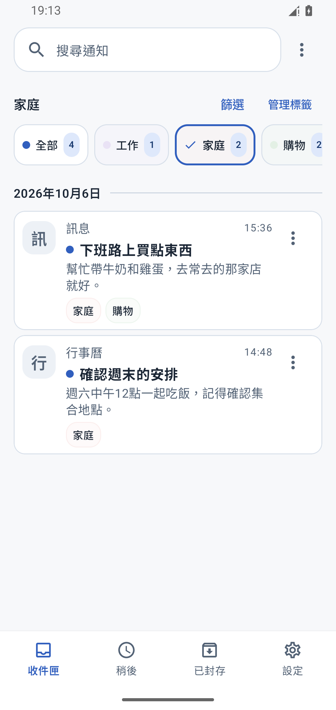
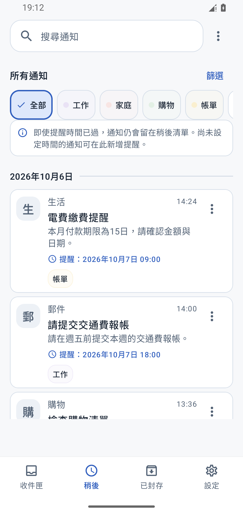
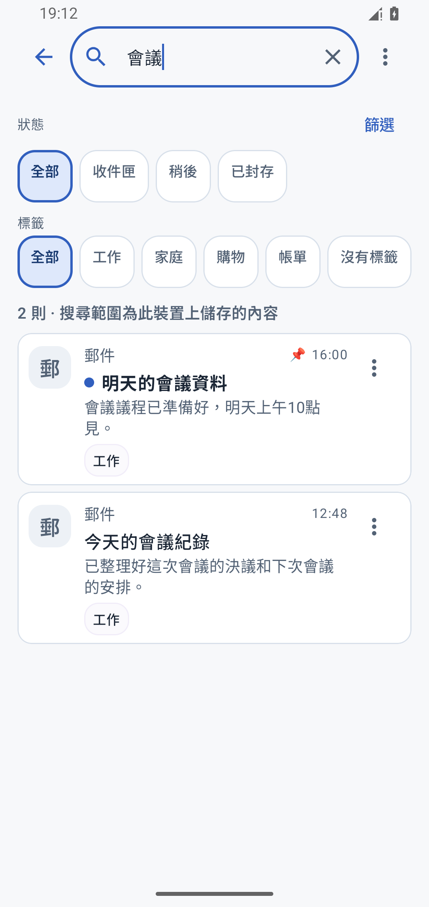
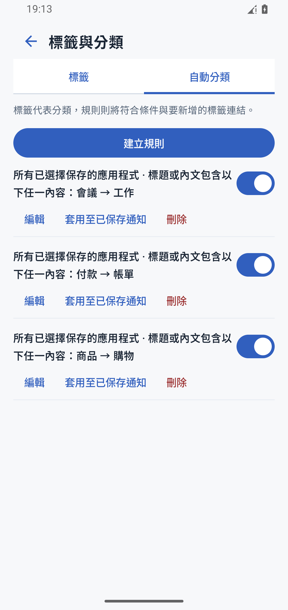

下班路上，
只看家人的訊息。
選擇「家庭」標籤，
確認家人託你買的東西。

- 收到通知
- 篩選家庭
- 查看事項
語言
儲存所選 App 的通知
透過標籤，篩選需要的通知
稍後查看，也能隨時搜尋
收到的通知，方便時再查看、再處理。
選擇「家庭」標籤，
確認家人託你買的東西。

把繳費通知加入「稍後」，
設定提醒，方便時再查看。

畫面中的通知均為範例。提醒功能需啟用，提醒可能因省電設定等因素延遲。
輸入「會議」等關鍵字搜尋。
從標題、內文和備註中，尋找已儲存的通知。
也能依 App、日期或標籤篩選。

依 App 或關鍵字，自動為新通知加上標籤。

把下一步要做的事寫在通知上。
整理收件匣，之後仍可搜尋。

儲存、搜尋、分類，都在裝置內完成。
通知內容、備註和標籤不會傳送到或儲存在營運方的伺服器上。
儲存哪些 App 的通知、保留多久，由你決定。
僅儲存啟用儲存功能後可取得的通知。此前已清除的通知無法還原。
開始儲存後成功取得並儲存的通知，即使從 Android 通知列清除，仍可查看。儲存前已清除的通知無法還原。受作業系統保護的通知等內容，可能無法取得內文。
通知內容、備註和標籤在裝置內管理，不會傳送到或儲存在營運方的伺服器上。手動匯出歷史紀錄時，檔案會儲存在你選擇的位置。你也可以啟用「檢視鎖定」，透過生物辨識或裝置螢幕鎖定保護存取。檢視鎖定不會加密已儲存的資料。
設定想查看的日期和時間並啟用提醒後，App 會在指定時間到達後發送提醒，方便你回來查看。此功能需要允許 App 顯示通知。提醒可能因省電設定等因素延遲。
在通知收件匣中標記已讀或整理通知，不會改變原 App 的已讀狀態。
所有功能皆可免費使用。支援 Android 12 以上版本。